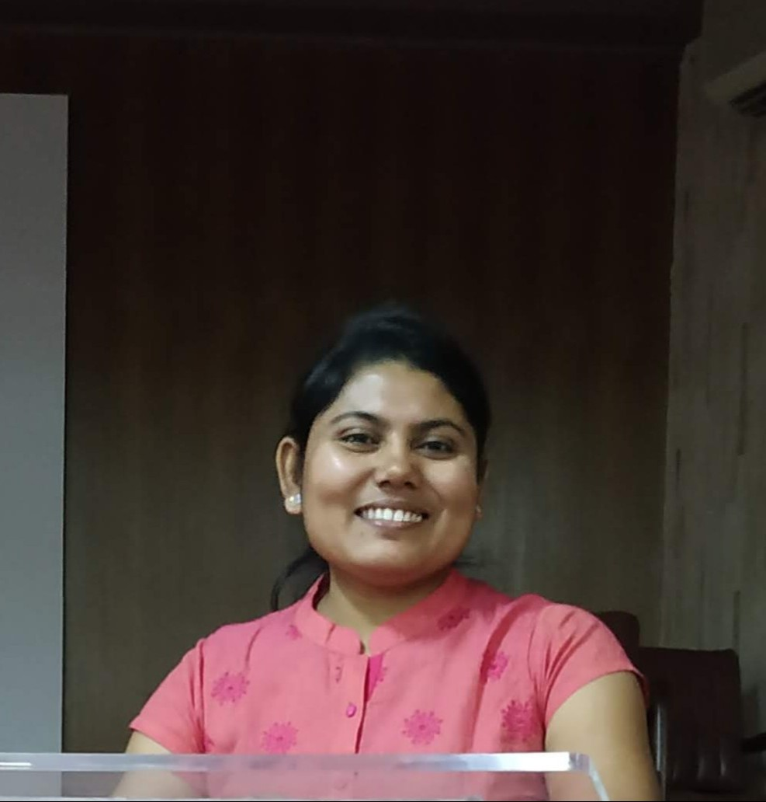

Plant Biochemist | Metabolomics & Plant Cell Wall Biology

I am a metabolomics scientist and plant biochemist specializing in mass spectrometry-based approaches to understanding plant cell walls, lipid metabolism, and biomass utilization. My research integrates metabolomics, lipidomics, and multivariate data analysis to investigate the molecular mechanisms underlying plant growth, cell wall architecture, and renewable biological resources.
I recently completed a postdoctoral appointment at the Umeå Plant Science Centre, Swedish University of Agricultural Sciences, where I developed analytical workflows combining GC-MS, LC-MS, and pyrolysis GC-MS to study hydrophobic components of Populus cell walls and cuticles. My work has contributed to new insights into the relationships between cell wall polysaccharides, lipids, and plant development.
I received my PhD from CSIR–Central Salt and Marine Chemicals Research Institute in 2019, where my research focused on microalgal biotechnology, omega-3 fatty acids, and biorefinery applications. I hold a B.Tech. in Biotechnology from West Bengal University of Technology.
I am currently seeking research opportunities in metabolomics, plant biology, biotechnology, and mass spectrometry.